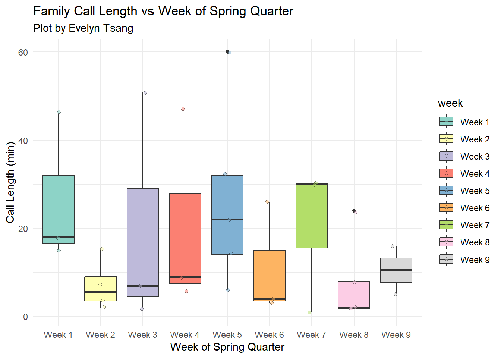
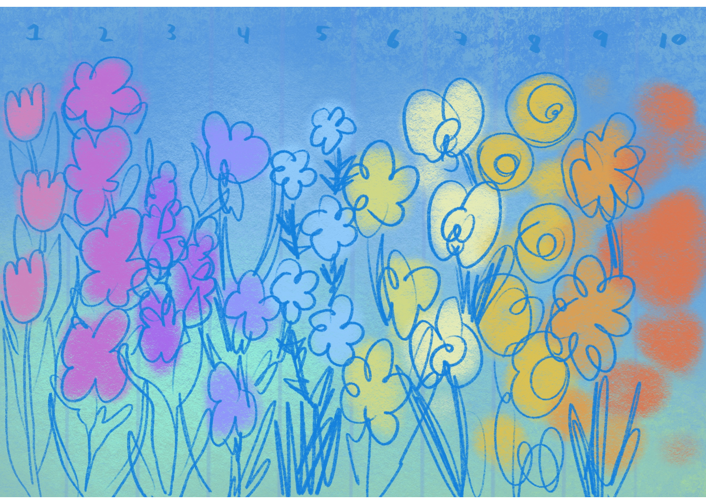
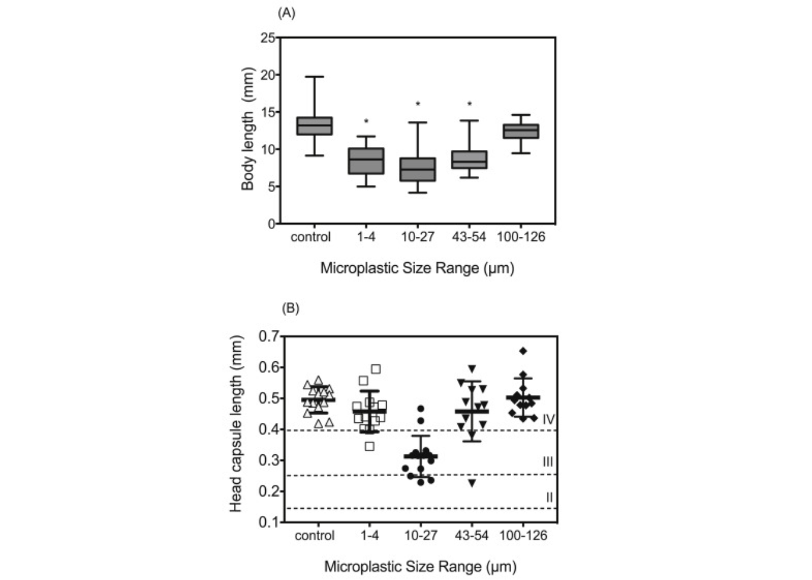

#loading in libraries
library(tidyverse)
library(here)
library(gt)
library(janitor)
library(readxl)
library(dplyr)
library(ggplot2)
library(magick)ENVS 193 DS Homework 3
GitHub basics on class website HTML
Part 1. Set up tasks
Link to GitHub Repository: https://github.com/ewtsang/ENVS-193DS_homework-03.git
Packages and Data:
Part 2. Problems
Problem 1. Personal Data
call_data <-read.csv(here("data", "Personal Data - Calls.csv"))
#load in personal dataa. Data summarizing
I could summarize my data to calculate the mean time spent on call to compare the median call times between the beginning of the quarter (Weeks 1-5) and towards the end (Weeks 6-10). Because I am more busy as the quarter progresses, I think my calls will become shorter during the later half of the quarter.
b. Visualization
call_data_clean <-clean_names(call_data)
#clean all column names so that they do not have any spaces or capitalization
ggplot (data= call_data_clean,
#making a plot using call data
aes(x=week , y=call_length, fill=week) ) +
#setting the axis to compared week (x axis) and call length (y axis)
geom_boxplot() +
#create a boxplot for each week of spring quarter
geom_jitter(aes(),
#each individual point is sorted by family member
width = 0.1, shape = 21, alpha = 0.5) +
labs(title = "Family Call Length vs Week of Spring Quarter",
subtitle = "Plot by Evelyn Tsang",
x = "Week of Spring Quarter",
y = "Call Length (min)") +
theme_minimal() +
scale_fill_brewer(palette = "Set3") +
scale_color_brewer(palette = "Set3")
#cleaning the aesthetics to be more minimal, and using scale fill/color manual to change c. Caption
Figure 1. Median family call lengths by week of Spring Quarter. This boxplot shows the distribution of call durations from Week 1 to Week 9. The median call length generally decreases from the beginning (Weeks 1-5) to the end (Weeks 6-9), which supports the hypothesis that call durations become shorter as academic demands increase over time.
d. Table presentation
call_summary <- call_data_clean |>
#creating new object "call_summary"
group_by(week) |>
#groups the data by "week" so that we can calculate statistics for each individual week of the spring quarter
#groups the data by "week" so that we can calcualte statistics for each individual week of the spring quarter
summarize(median_call_length = round(median(call_length, na.rm = TRUE), 1)) |>
#calculates the median call length for each week, rounding to one decimal point
#"na.rm = TRUE" ignores any missing values
arrange(week)
#arranges rows in ascending order of week
#display as a gt table
call_summary |>
gt() |>
#converts the summary data frame into a gt table for nicer formatting
tab_header(title = "Median Family Call Length by Week",
#setting the title of the table
subtitle = "Table by Evelyn Tsang") |>
#setting the subtitle of the table
cols_label (week = "Week",
#labeling columns of the table...
median_call_length = "Median Call Length (min)")| Median Family Call Length by Week | |
|---|---|
| Table by Evelyn Tsang | |
| Week | Median Call Length (min) |
| Week 1 | 18.0 |
| Week 2 | 5.5 |
| Week 3 | 7.0 |
| Week 4 | 9.0 |
| Week 5 | 22.0 |
| Week 6 | 4.0 |
| Week 7 | 30.0 |
| Week 8 | 2.0 |
| Week 9 | 10.5 |
#relabeling "week" and "median_call_length" so there is correct capitalization and so there are units displayedProblem 2. Affective visualization
a. Describe in words what an affective visualization could look like for your personal data
(3-5 sentences)
An affective visualization of my personal call data could take the form of a digital painting where each week of the quarter is represented by a flower. The size of the flower’s bloom could correspond to the median length of my calls that week—larger blooms representing longer, more relaxed conversations, and smaller, tight buds representing shorter, more rushed calls. The colors could transition from calm blues and greens at the start of the quarter to warm reds and oranges as my schedule becomes more stressful and busy. This visual metaphor would evoke how my emotional and academic state affects my communication with family. It centers the personal, emotional rhythms of time and relationships over pure statistical accuracy.
b. Create a sketch of your idea
image<- image_read("/Users/ewtsa/Documents/ENVS-193DS/GitHub/ENVS-193DS_homework-03/HW3Paper.jpg")
grid::grid.raster(image)
c. Make a draft of your visualization
image<- image_read("/Users/ewtsa/Documents/ENVS-193DS/GitHub/ENVS-193DS_homework-03/HW3Draft.jpg")
grid::grid.raster(image)
d. Write an artist statement
An artist statement gives the audience context to understand your work. For each of the following points, write 1-2 sentences to address:
the content of your piece (what are you showing?) the influences (what did techniques/artists/etc. did you find influential in creating your work?) the form of your work (written code, watercolor, oil painting, etc.) your process (how did you create your work?)
Content: This piece visualizes the emotional arc of my family communication over the course of the quarter. Each week is represented through abstracted flowers.
Influences: I was influenced by Jill Pelto’s blending of science and art, as well as the Dear Data project, which turns personal data into expressive and thoughtful visual stories. These artists inspired me to move beyond numeric precision and lean into emotional storytelling.
Form: My visualization takes the form of a colorful digital drawing. It emphasizes aesthetics and emotional tone over analytical precision.
Process: I began by summarizing my data and identifying trends in call length. I then translated those trends into symbolic forms—flowers of different sizes, or violins with layered color—and used either physical media or gentle ggplot customizations to express how my stress and availability change over time.
Problem 3.
At this point, you have seen and created a lot of figures for this class. Revisit the paper you chose for your critique and your homework 2, where you described figures or tables in the text. Address the following in full sentences (3-4 sentences each).
For this section of your homework, you will be evaluated on the logic, conciseness, and nuance of your critique.
Link to paper here: https://www.sciencedirect.com/science/article/pii/S0269749117341234?via%3Dihub
a. Revisit and summarize
The statistical tests the authors are using to address their main research question would be a one-way analysis of variance (ANOVA) and a Pearson test was performed to test the normality of data. Statistical difference was set at α=0.05.
Figure/table described in Homework 2 here.
image<- image_read("/Users/ewtsa/Documents/ENVS-193DS/GitHub/ENVS-193DS_homework-03/Ziajahromi.jpg")
grid::grid.raster(image)
b. Visual clarity
Ziajahromi et. al. represents the data using boxplots and scatterplots with means and standard errors. The x and y axis are appropriately labeled, and the sale is logical. Panel A shows summary staistics (median, quartiles, range) as well as indibidual outliers, while panel B overlays the collected raw data points with error bars, enhancing the distribution.
c.Aesthetic clarity
In 1-3 sentences, answer the question that best fits your paper.
If you inserted a figure in Part a: How well did the authors handle “visual clutter”? How would you describe the the data:ink ratio?
If you inserted a table in Part b: How well did the authors handle “visual clutter”? Is there any bolding/italic text to draw your eye to specific numbers?
If you have neither: Critique another figure or table in the text for aesthetic clarity (and insert a screenshot of that figure/table in your submission).
d. Recommendations
What recommendations would you make to make the figure or table better? What would you take out, add, or change? Provide explanations/justifications for each of your recommendations.
Alternatively, if they did not represent their statistics in a figure, what kind of figure would you recommend to them? Describe the x- and y-axes, with any geometries and aesthetics (colors, etc.). Provide enough explanation such that someone would be able to create the figure you describe in code. Provide explanations/justifications for the figure you would recommend.